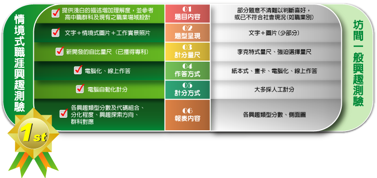
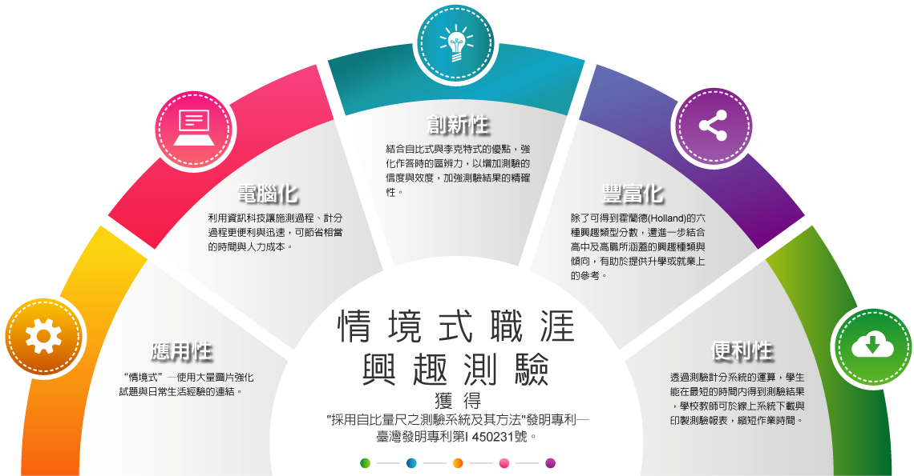

-
- 什麼是情境式職涯興趣測驗?
- 有別於過去採用紙筆與試題文字描述的測驗模式，情境式職涯興趣測驗(Situational Career Interest Test)採用電腦多媒體技術與多元訊息的方式， 讓學生能更瞭解職業場域、課程與活動，以突破現有測驗無法讓學生做出適當喜好判斷的困境。此外，透過新開發之計量技術及作答形式， 進而能提升學生作答的區辨度，使得測驗結果更有參考價值。透過本測驗，協助學生瞭解自身的興趣所在，並有助於自我探索，作為職涯決策的參考資訊。

-
- 本測驗的特色與優勢
- 一、電腦化測驗
結合資訊技術以及多媒體技術，發展有別於傳統紙筆式測驗的新作答題型。此外，系統自動化計分及報表產生之技術，可大幅節省時間及人力成本。
二、情境式試題
使用大量圖片強化試題與日常生活經驗的連結，以改善學生面對不熟悉或未接觸的事物，造成無法適當判斷其喜好程度之測驗偏誤。
三、新式計量技術
結合自比式與李克特式作答方式的優點，加強受試者作答時的區辨能力，並增加測驗的信效度。
四、反映作答品質與分化程度
針對受試者之作答狀況及答題特色，提供有關檢視作答品質和興趣分化程度之說明。
五、結合高中職群科
本測驗除了Holland的六種興趣類型分數，並進一步根據實徵資料，給予受試者在高中及高職15群科中興趣組型較接近之群科建議，以利升學或就業上的參考。
六、提供職涯相關測驗整合型報表
除了本測驗既有之報表，還可參加適性化職涯性向測驗以取得整合型報表。該報表提供學生興趣和性向之間適配的情形，作為學生進行職涯抉擇之參考資訊，也提供學校教師和家長更為全面及整體之訊息，給予學生更適切之輔導建議。

-
- 分數參照方式
- 本測驗強調個人內興趣喜好程度之比較，而非個體之間的相互比較。故本測驗不以常模參照測驗之形式，提供平均數、標準差及百分等級等整體性常模，取而代之的是提供個人的興趣組型及各種興趣之間的分化程度之說明。
-
- 試題品質及信效度分析
- 本測驗以民國100年就讀國中8、9年級之學生，進行預試資料收集，共計施測21間學校。總有效施測人數為1790人，性別分布為男生909人（50.8%）、女生881人（49.2%）。
試題試題分析包含題目整體之程度值、標準差以及試題分數與總分之相關(鑑別度)。分析結果得出：第一，試題對於受測者來說沒有過於極端的好惡程度，其程度值在39~67之間，多數試題的程度值在50左右；第二，受測者在試題的反應上可以展現偏好的差異，所有試題的標準差在20~29之間；第三，多數試題的鑑別度在.4以上(鑑別度超過.4以上屬於優良試題)。
分析信度經由預試資料分析，各興趣類型之分數，折半信度均超過.90，Cronbach’s α係數則均高於.93以上，顯示各分量表內容皆具良好的內部一致性。
研究效度本測驗以探索性因素分析進行Holland的興趣類型的構念效度驗證，從分析結果可以看出，本次施測的試題可以明確地代表六種不同的興趣類型，代表對於測量的結果可以用Holland的興趣類型加以解釋。各興趣類型之因素負荷量多數介於－實用型（R）.30~.85、研究型（I）.32~.76、藝術型（A）.41~.82、社會型（S）.24~.73、企業型（E）.22~.61，以及事務型（C）.35~.81。
研究
-
- 研發與製作
- 版權所有人：宋曜廷教授
由國立臺灣師範大學心理與教育測驗研究發展中心及數位學習研究室共同開發。